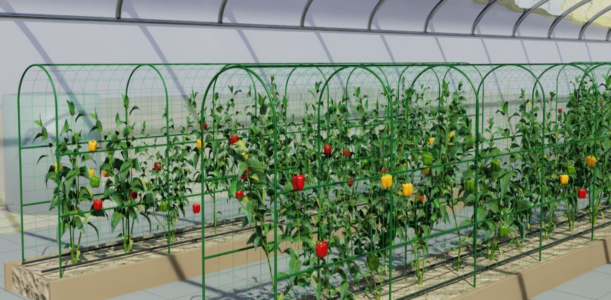
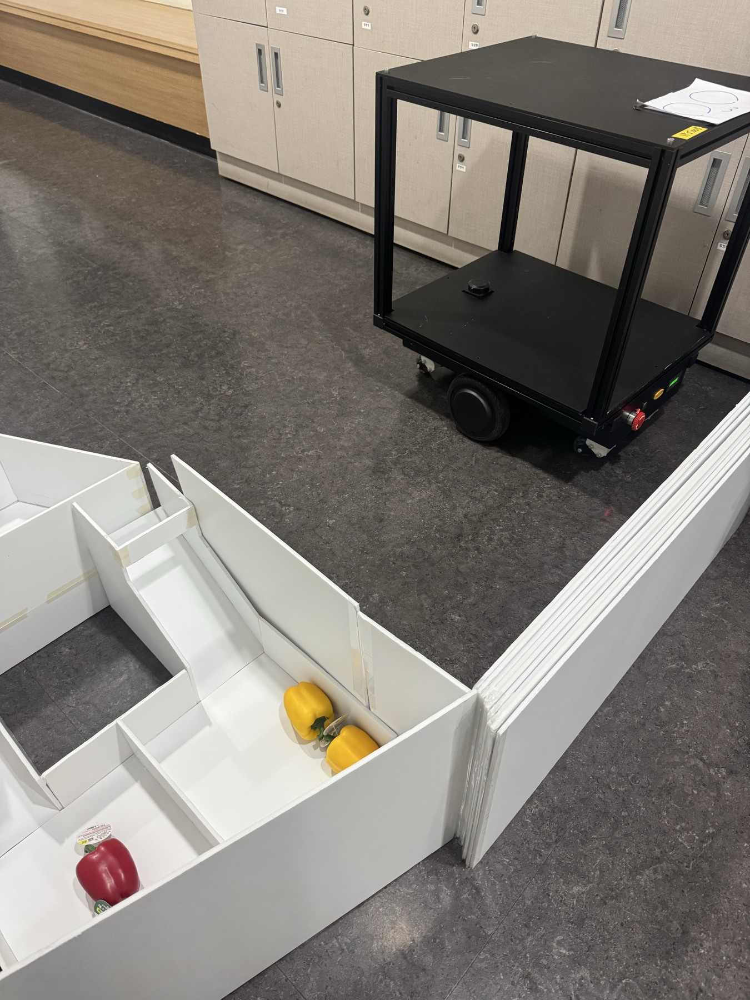

01 / ROS 2 · SMART FARM진행 중 · 2026.09 -
다중 로봇 협업 스마트팜
파프리카를 살피고, 수확하고, 옮기고, 선별하는 농작업 자동화 프로젝트입니다.
예찰·수확·운송 로봇과 선별 장치를 ROS 2로 연결합니다. 중앙 관제가 각 로봇의 작업과 상태를 관리하며, 예찰 결과를 다음 수확 작업으로 이어주는 시스템을 개발하고 있습니다.
나의 역할
예찰 로봇 개발
재배 구역을 먼저 주행하며 수확할 위치와 예상 수확량을 정리하고, 관제와 수확 로봇이 사용할 작업 정보를 만드는 역할입니다.
담당 업무 · 설계 및 개발 중
- 자율주행 · 복귀 · 도킹
Nav2 기반 예찰 경로 이동과 임무 종료 후 스테이션 복귀·도킹을 담당합니다.
- 수확 작업 정보 생성
AI 탐지 결과와 로봇 위치를 연결해 작업 위치·순서·예상 수확량을 구성합니다.
- 임무 상태 · 관제 연동
예찰 FSM과 ROS 2 통신 구조를 설계하고, 작업 진행·완료·로봇 상태를 관제에 전달합니다.

전체 프로젝트 목표예찰에서 선별까지
하나의 작업 흐름으로
하나의 작업 흐름으로
예찰 결과 → 수확 작업
수확물 인계 → 운송·선별

01예찰내 담당 · 주행 및 작업 정보
02수확로봇팔로 작물 수확
03운송수확물 이송
04선별분류·후속 공정
ROS 2Nav2FSMAction / Topic7인 팀